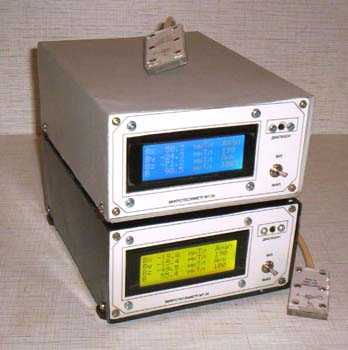
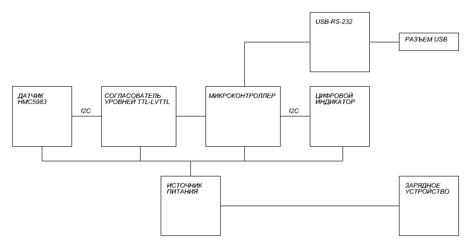
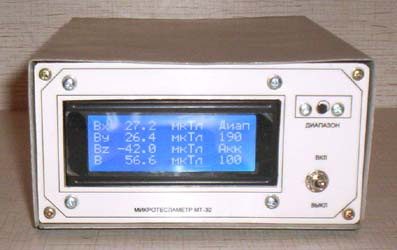
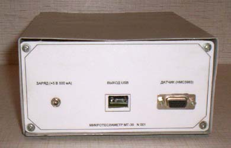
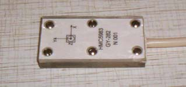
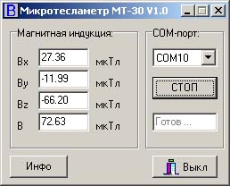

Цифровой микротесламетр с
магниторезистивным датчиком HMC5983
(HMC5883, QMC5883) для измерения индукции слабых
постоянных магнитных полей

Назначение
Цифровой микротесламетр предназначен для оперативного измерения и контроля величины трех компонент и модуля индукции постоянного магнитного поля (сопоставимого с магнитным полем Земли) с помощью магниторезистивного датчика типа HMC5983 [1] (или его близких аналогов - HMC5883, QMC5883). Он может использоваться при измерении и контроле магнитного поля Земли, полей рассеяния постоянных магнитов и магнитных систем, измерении магнитных полей рассеяния транспортируемых грузов, контроле магнитной обстановки, при конструировании и ремонте магнитных систем и устройств с постоянными магнитами, оценки качества размагничивания стальных изделий [5], а также для построения различных измерительных установок и комплексов [4]. Прибор имеет автономное питание - аккумуляторную батарею, подзарядка которой может осуществляться сетевым зарядным устройством.
Технические данные:
Устройство микротесламетра
Блок-схема цифрового микротесламетра с магниторезистивным датчиком HMC5983 приведена на рис. 1. Микротесламетр собран из готовых модулей: микроконтроллер, датчик, преобразователь уровней [2], цифровой индикатор (4 строки по 20 символов), преобразователь интерфейса USB - RS232[3], повышающий преобразователь напряжения, аккумуляторная батарея с устройством защиты.

Рис. 1. Электрическая блок-схема микротесламетра.
В качестве чувствительного элемента прибора использована микросхема HMC5983 [1] (AMR-датчик, датчик с анизотропным магниторезистивным эффектом). Ее практически полный аналог - HMC5883 (отсутствует температурная компенсация данных измерений), неполный аналог - QMC5883 (есть температурная компенсация данных, совместимость на аппаратном уровне, неполная совместимость на программном уровне). В состав микросхемы входят три магниторезистивных датчика, оси максимальной чувствительности которых взаимноортогональны. Связь датчика с микроконтроллером прибора осуществляется по интерфейсу I2C с дополнительным сигналом готовности через согласователь уровней TTL-LVTTL. Для питания узлов прибора используется аккумуляторная батарея с повышающим преобразователем напряжения.
При проведении измерений используется процедура их усреднения по некоторому заданному количеству отсчетов с датчика.
Корпус прибора состоит из основания, передней и задней панелей, соединенных между собой. Электронные узлы прибора, устройства подключения и управления, а также аккумуляторная батарея крепятся на основании и панелях. Сверху корпус закрывается П-образным кожухом. На рис. 2 и 3 показан вид микротесламетра спереди и сзади.

Рис. 2. Цифровой микротесламетр - вид спереди.
На передней панели прибора расположены: выключатель питания ("ВКЛ - ВЫКЛ"), кнопка выбора диапазона измерений ("ДИАПАЗОН"), цифровой индикатор прибора, показывающий три компоненты магнитной индукции, модуль магнитной индукции, выбранный диапазон измерений (в мкТл) и степень заряженности аккумуляторной батареи (в процентах).

Рис. 3. Цифровой микротесламетр - вид сзади.
На задней панели прибора расположены: разъем для подключения зарядного устройства ("ЗАРЯД (+5В 500 мА)"), разъем для подключения щупа ("ДАТЧИК (HMC5983)"), разъем для подключения компьютера ("ВЫХОД USB").
В качестве зарядного устройства может использоваться любое зарядное устройство с выходным напряжением холостого хода 5.0 ... 5.4 В и выходным током до 0.5 А. Для контроля степени заряженности аккумуляторной батареи используется цифровой индикатор прибора.
Конструкция щупа
Щуп микротесламетра состоит из немагнитных токонепроводящих основания и верхней крышки, скрепленных между собой немагнитными винтами (рис. 4). Внутри помещается печатная плата с микросхемой HMC5983 и элементами обвязки. Выводы платы подключены к соединительному кабелю.

Рис. 4. Щуп с микросхемой HMC5983. Габариты щупа 60 х 30 х 9 мм3.
Местоположение датчика в щупе указано на наклейке, там же показано направление координатных осей для определения направления вектора магнитной индукции (знак компоненты вектора магнитной оси вдоль заданной оси соответствует ее знаку на индикаторе прибора).
Программное обеспечение
Для совместной работы микротесламетра с компьютером используется преобразователь интерфейса USB - RS-232 (COM-порт). Его применение позволяет существенно упростить разработку программного обеспечения. Интерфейс одного из вариантов программы передачи данных прибора к компьютеру и вывода показаний на монитор показан на рис. 5. Файл программы: MT_30.rar (~177 Кб, архиватор WinRAR).

Рис. 5. Интерфейс программы для вывода показаний микротесламетра на монитор компьютера.
Желающие приобрести или самостоятельно изготовить цифровой микротесламетр с магниторезистивным датчиком HMC5983 могут обратиться за дополнительной информацией к автору (см. раздел Контактная информация).
Соотношения между единицами измерения магнитной индукции (Тл - Тесла, Гс - Гаусс):
Ссылки:
22.12.2017
Альтернативные источники
энергии
Компьютеры и
Интернет
Магнитные поля
Механотронные системы
Перспективные
разработки
Электроника и
технология